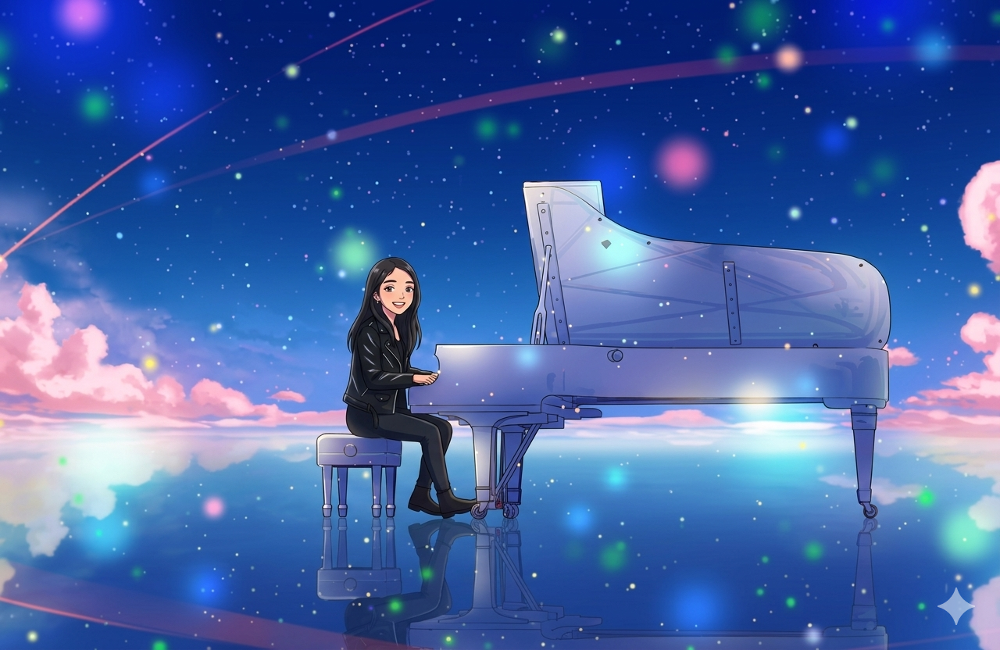

Para Alguien Muy Especial
El Universo
De Aby
Este espacio es tuyo. Creado para ti, con todo lo que te hace brillar. Cada vez que entres aquí, quiero que sepas bueno mas bien que recuerdes que tienes a alguien que piensa en ti todo el tiempo y en lo increíble que eres, queria hacerte una especie de regalo y bueno puede que no sea mucho, pero te doy algo de lo que mejor se hacer y lo comparto contigo, Esto es para que veas lo que siento por ti lo que veo en ti miralo como una especie de reflejo, eres alguien que todos deberian tener en su vida pero el hecho de que estes en la mia es un regalo increible. La verdad en estos tiempos es imposible casi imposible encontrar a alguien que en verdad valga la pena y tu eres esa excepcion esa persona que sabe alegrar mis dias y que agradezco cada dia por haber encontrado. 💕
~ este lugar existe porque tú existes ~
↓ explora tu universo ↓
para la chica que es capaz de hacer música con sus manos
Tu piano
Toca las teclas — Esto es como para que siempre tengas música cerca, aunque estés cansadita.
🎹 también tocas guitarra eléctrica, acústica y violín — más perfecta no puedes ser, mi bellísima Aby 😄 no había presupuesto para esos, pero por el momento te doy este mini piano que puedes llevar a donde sea, igual ahi se hace mini practica ajsjsajsa o anti estres.

todo lo que eres
Tu universo
Toca cada cosa para descubrir un mensaje. Este mundo fue hecho pensando en ti.
// quién eres
Quién eres
una dedicatoria especial para ti
Your Lie in April
🎹 Por qué te dedico esta intro, Aby
Esta intro empieza un anime super lindo, la primera vez que lo escuche quede encantado, la melodia la voz, aunque claramente no entendia ni una palabra de lo que decia jasjajsaj pero luego decidi buscarlo con el significado.
Asi que imagina mi sorpresa cuando vi la letra y yo no paraba de decir uf esta intro es especial, el anime me lo recomendaste y fue absolutamente increible, no tengo palabras para describir lo mucho que me gusto e impacto, pero retomando jasjsaj me desvie un poco al ver el significado de esta cancion, tu fuiste la primera imagen que llego a mi mente, cada que suena esta intro me acuerdo de ti
y ahora que estoy viendola otra vez porque empezo abril imaginate todos los dias tu llegando a mi cabeza, jsajjas esta intro nunca la saltaria porque me gusta muchisimo y es asi como tu, no me cansaria de ti. — y bueno mira la verdad puedo tener miles de problemas, puedo estar estresado, enfermo pero nunca me cansaria, porque uno no se cansa de lo que ama como dice por ahi una frase, la música que no todo el mundo tiene. Kousei perdió su música por un tiempo y tambien su sentir, pero la encontró de nuevo gracias a alguien que entró a su vida y lo cambió todo.
Muy familiar a lo que te he dicho ¿no? ya ves a lo que me refiero, por eso que lo diga tanto no es solo porque quiera repetir es porque es la verdad de lo que haces, y la verdad no se porque no lo notas, quisiera que lo vieras todo desde mi perspectiva entenderias mi sentir,
Esta intro es para ti — para la chica que toca piano o bueno que estas aprendiendo pero es igual asjsja dejame, pero el punto es que no sabes cuánta belleza produce cuando lo haces. Esto es para ti que al igual que Kaori, haces que el mundo se sienta más vivo cuando estás cerca.
Sigue tocando, Aby con todo el corazón, el mundo te necesita sonando, yo te necesito, y se que seras la mejor porque desde ahora ya lo eres entonces eso solo me deja que lo seras siempre.
// 04 — anime world
Anime & más 🎌
// in your language
Words for you ✍️
solo tú
Tu diario
¿Cómo te sientes hoy? Este espacio es seguro, tranqui que es solo para ti.
Tu diario, Aby 📖
"Hay alguien que siempre nota cuando no estás,
que piensa en ti cuando ve el cielo y sus estrellas,
por eso esta canción siempre será tuya A Sky Full of Stars
porque eso es exactamente lo que eres."
No es coincidencia que esto exista.
Alguien una personita por ahí jasjsaj quién sabe quién será, se preguntó alguna forma en la que podría animarte y decidió crear un mini universo para ti.
Esa persona te quiere con todo el corazón y siempre te extraña. 🌌
para cuando necesites reírte un poco
Videos Random 🎲
Toca el botón para ver una sorpresa 🎁
// una historia para ti
La chica de las estrellas

~ continuará... ~
El juramento de Josh para Aby
— Josh ✦ siempre
Nunca dejaré de estar
presente en tu universo
Aby,
No importa cuánto tiempo pase, cuántas estrellas cambien el cielo, cuántas canciones escuches sin que yo esté ahí para mandártelas — siempre voy a estar presente.
Puede que algunas veces sea intenso, lamento eso, pero igual no se es como mi forma de hacerte saber que aqui sigo, que no tienes que temer que me tienes a mi tambien. Tu estas en el pensamiento de mis mañanas, en las canciones que de repente suenan y dicen todo lo que no sé decir, en las películas que veo pensando "le gustaría a Aby", en ese lugar del corazón donde se guardan las personas que de verdad, de verdad, importan.
Y tú eres esa persona para mí.
Nunca voy a dejar de extrañarte. Nunca voy a dejar de ver en ti a esa chica increíble que aparece en mis mejores recuerdos con esa sonrisa que podría iluminar galaxias enteras. Porque lo que eres — tu voz, tus manos sobre el piano, violin, guitarra o cualquier cosa que llegues a tocar o hacer, tu manera de reír, tu corazón enorme que a veces cuidas con tanta discreción — eso no se olvida, Aby asi que a pesar de mi pesima memoria, los momentos contigo, las conversaciones y a ti eso si que jamas lo olvidare.
Este universo lo construí para que lo vieras. Para que cuando lo abras, en cualquier momento, en cualquier lugar del mundo, sepas que en algún rincón del planeta hay alguien que te ve por lo que eres, que te extraña sin que tengas que pedirlo, y que siempre, siempre va a desear lo mejor para ti.
Eres perfecta — perfecta Asi los demás o tu digas lo contrario nunca cambiare mi opinion. Y el mundo, mi mundo, es mejor porque existes en él.
Con todo el corazón,
— Josh 🌌✦
siempre presente · siempre admirándote · siempre aquí cozaron